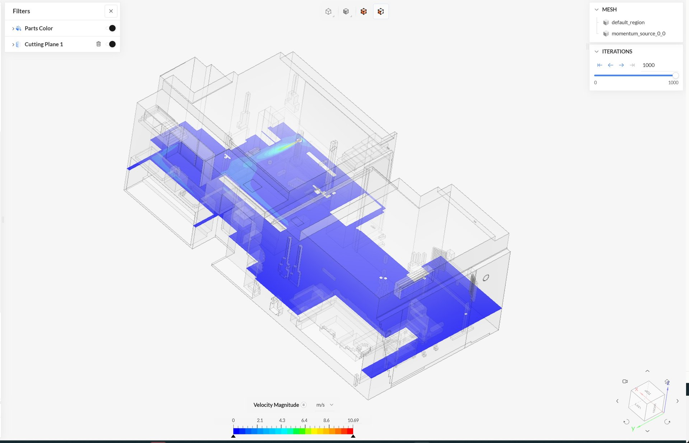
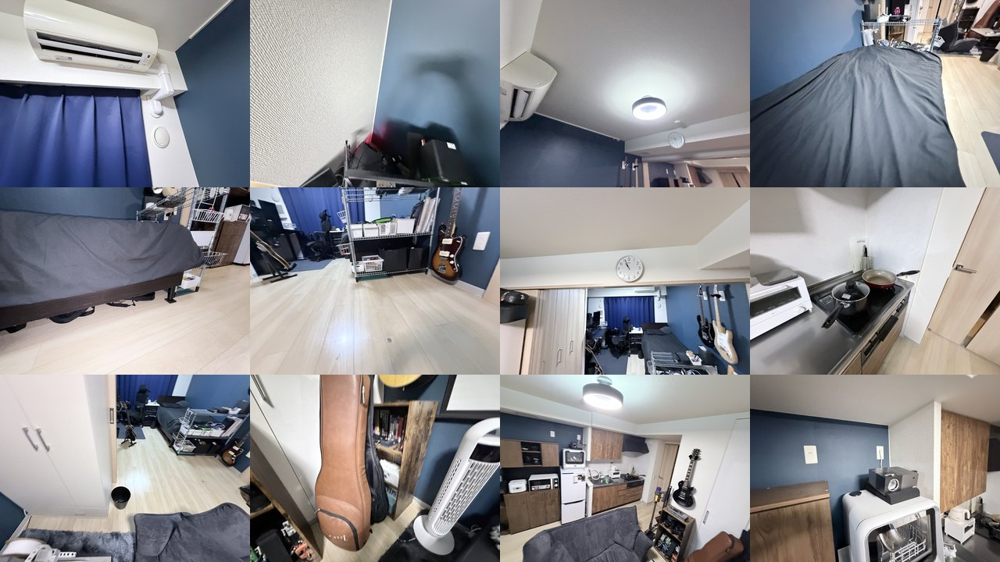
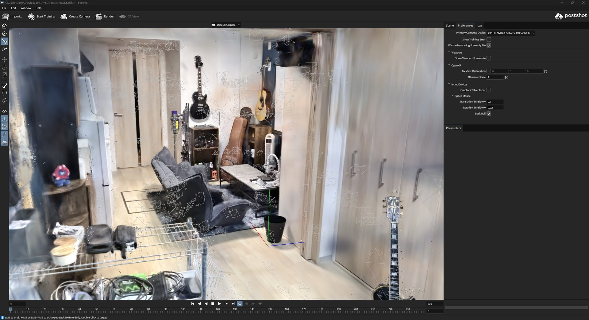
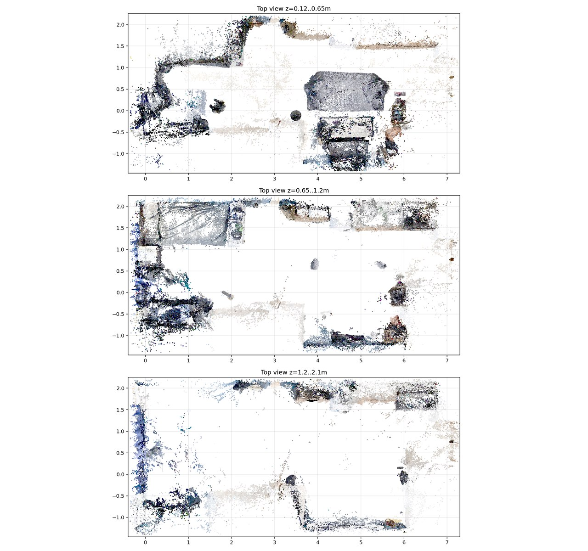
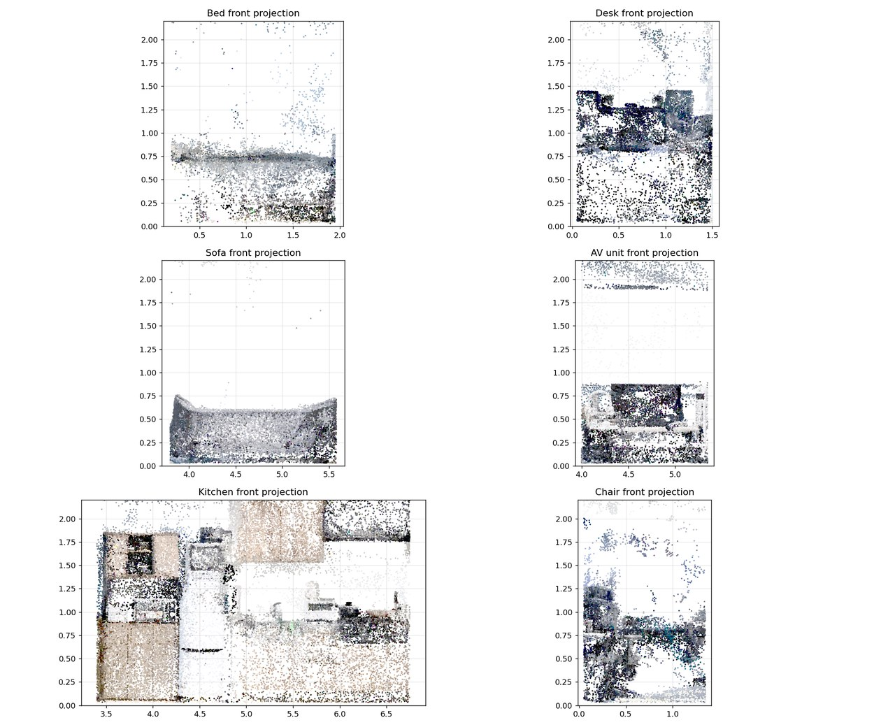
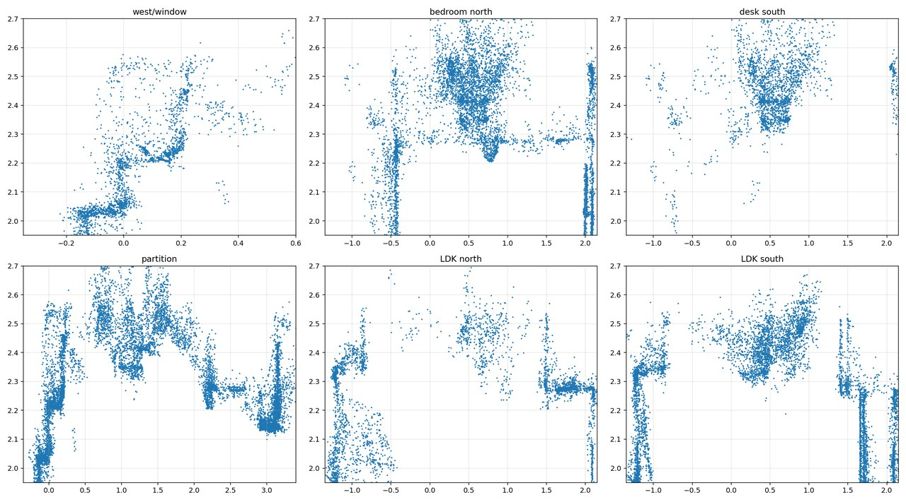
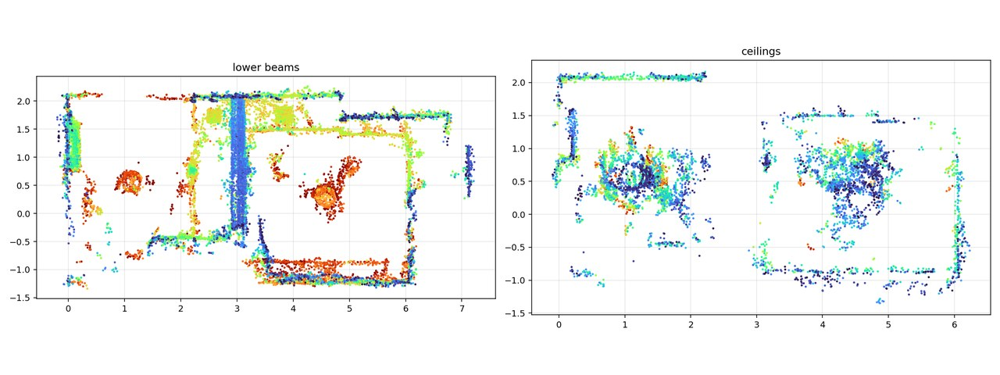
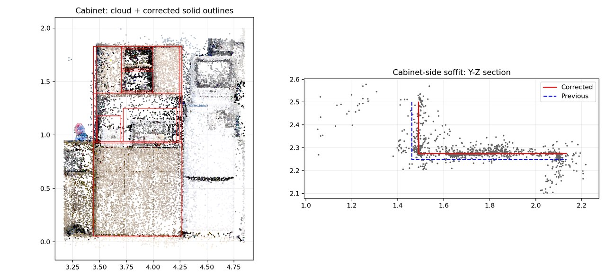
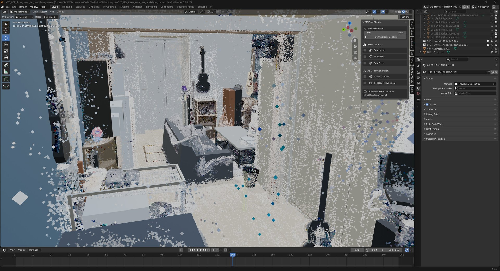

概要
新居の室内をスマートフォンで撮影し、3D Gaussian Splatting（3DGS）でカラー点群として再構成しました。その点群を実寸に合わせたうえでCFD用のソリッドモデルへ作り直し、SimScale上で室内の気流と温度分布を計算しています。
狙いは、間取りと家具配置を実物どおりに保ったまま、タワーファンをどこに置きどちらへ向けると室内全体の空気がよく回るかを、数値で比較できるようにすることです。

課題と目的
エアコンの吹出口と吸込口、窓脇の丸型換気口、天井の排気グリル、いずれも位置が決まっています。そこへ冷蔵庫や仕切り戸、下がり梁が加わって気流の通り道が区切られ、冷えすぎる場所と空気が動かない場所ができます。
タワーファンで解消しようにも、家具を動かさずに置ける場所は限られます。置き換えて試すのは手間がかかり、体感では良し悪しも判断できません。そこで実空間をそのままCFDモデル化しました。目的は、室内の気流と温度の状態を可視化すること、そしてタワーファンの設置位置と吹出方向を最適化することの2つです。
3DGSによる室内の再現
室内を多方向から撮った542枚の写真を入力に、Postshotで3DGSを学習させ、約50万個のスプラットからなるカラー点群を得ました。家具や家電の位置関係を含め、実際の部屋の状態がそのまま3Dデータとして残ります。


CFDモデルの作成
CFDでは流体の入れ物になる面が閉じている必要がありますが、点群は面を持ちません。そのため点群をそのまま解析に渡すことはできず、壁・床・天井・梁・窓・家具・家電・エアコン・タワーファンを、閉じたソリッド形状として作り直しています。




形を直したあとは、同じ断面に修正前後の輪郭を重ねて確かめています。下は冷蔵庫横の収納まわりで、修正後のソリッド外形（赤線）が点群に合っているか、下がり天井の高さが以前の値（青破線）からどう変わったかを見ているところです。


解析条件
SimScale上で、室温と気流を同時に解く設定にしています。空気の出入りは、窓脇の丸型換気口2か所から入り、天井の排気グリル2か所から抜ける経路です。給気と排気は、設定上どちらも合計30 m³/hで釣り合わせています。レンジフードは今回のケースでは停止させた状態として扱い、閉じた壁にしました。
| 項目 | 設定 |
|---|---|
| 解析種別 | Convective Heat Transfer Compressible（圧縮性を考慮した対流熱伝達） |
| 乱流モデル | k-omega SST |
| 時間依存性 | 定常解析（end time 1000 / Δt 1 / 書き出し間隔 100） |
| メッシュ | 4,063,479セル |
空気の出入り
| 面 | 種別 | 設定値 |
|---|---|---|
| エアコン 吹出口 | 速度入口 | 18 ℃ / 速度ベクトル (2.0, 0, −0.5) m/s |
| エアコン 吸込口 | 圧力出口 | ゲージ圧 0 Pa |
| 丸型換気口 左 | 速度入口 | 30 ℃ / 15 m³/h（0.9569 m/s） |
| 丸型換気口 右 | 速度入口 | 30 ℃ / 15 m³/h（0.9569 m/s） |
| 天井グリル 収納側 | 速度出口 | 15 m³/h（0.0641 m/s、+Z方向） |
| 天井グリル 間仕切り側 | 速度出口 | 15 m³/h（0.1292 m/s、+Z方向） |
| レンジフード | 壁（断熱） | 停止状態 |
熱の条件
| 面 | 種別 | 設定値 |
|---|---|---|
| 窓 | 熱伝達 | 外気 30 ℃ / 熱伝達率 15 W/(m²·K) |
| 壁 | 熱伝達 | 外気 30 ℃ / 熱伝達率 8 W/(m²·K) |
| 床 | 温度固定 | 26 ℃ |
| 天井・下がり天井 | 温度固定 | 29 ℃ |
| 家具・室内機器 | 断熱 | 熱の出入りなし |
送風源
タワーファンは、羽根の形を再現する代わりに、本体内部の通風路へ平均速度を与える「運動量ソース」として扱っています。形状を作り込まずに送風の効果を与えられるので、設置位置や向きを差し替える比較に向いた方法です。
| 対象 | 種別 | 設定値 |
|---|---|---|
| タワーファン | 運動量ソース | 平均速度 (0, 8.0, 0) m/s |
タワーファン位置の比較方法
| 観点 | 見るところ |
|---|---|
| 風速分布 | 室内各所の風速が偏っていないか。 |
| 温度ムラ | 室内の温度差の大きさ。 |
| 滞留域 | 空気がほとんど動かない領域の位置と広さ。 |
| 家具との干渉 | 送風が家具に正面から当たって止まっていないか。 |